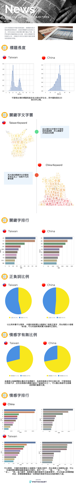

Our Infographic

Conclusion
新聞充斥著我們，但是我們平常會關注的也是部分感興趣的，所以我們想透過此次的了解台灣新聞的整個環境，
在這次的報告中我們分別對中國和台灣的新聞進行文字探勘，希望可以找到不同的兩個國家的新聞標題中隱藏的一些訊息。
在關鍵字方面，我們分別將前幾名的文字進行關鍵字關聯分析，
我們發現中國的新聞的領域比較廣，且關於政治的議題也明顯有被壓抑，
相較之下台灣主要的議題都圍繞在政治方面，主要是因為近期有總統大選的關係，且言論也較開放。
在情感方面，我們使用了 ntu 和 chew 的情感詞，分別提取兩個資料集情感詞彙，
我們可以發現包含情感字的新聞佔了約 4分之1，可以知道情幹字在新聞中其實是不可或缺的一個部分，
因為它可以加強新聞的力。也因為我們的資料集是標題為主，在標題中主要的一些單個情感字像是「死」、「毒」之類的為主，
讓人可以馬上接收到對應的情感震撼。以正負面的詞數量，
可以發現台灣主要是負面的用詞較多，而中國的新聞則較多正面，可以知道其中假新聞比較多是正向的詞彙。